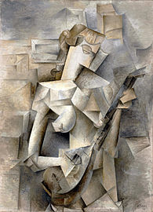

- Blue Period
-
1901 – 1904
Picasso's Blue Period (1901–1904), characterized by sombre paintings rendered in shades of blue and blue-green, only occasionally warmed by other colours, began either in Spain in early 1901, or in Paris in the second half of the year.
Read More →
PICASSO
CAREER
-
Pablo Picasso - La Vie (1903)
-
Pablo Picasso - Les Baladins (1904 - 1905)
- Rose Period
-
1904 – 1906
The Rose Period (1904–1906) is characterized by a lighter tone and style utilizing orange and pink colours, and featuring many circus people, acrobats and harlequins known in France as saltimbanques. The harlequin, a comedic character usually depicted in checkered patterned clothing, became a personal symbol for Picasso.
Read More →
-
 Pablo Picasso - Les Demoiselles d'Avignon (1907)
Pablo Picasso - Les Demoiselles d'Avignon (1907)- African art and Primitivism
-
1907 – 1909
Picasso's African-influenced Period (1907–1909) begins with his painting Les Demoiselles d'Avignon. Picasso painted this composition in a style inspired by Iberian sculpture, but repainted the faces of the two figures on the right after being powerfully impressed by African artefacts he saw in June 1907 in the ethnographic museum at Palais du Trocadéro.
Read More →
-
Pablo Picasso - Girl with a Mandolin (1910)
- Analytic cubism
-
1909 – 1912
Analytic cubism (1909–1912) is a style of painting Picasso developed with Georges Braque using monochrome brownish and neutral colours. Both artists took apart objects and "analyzed" them in terms of their shapes. Picasso and Braque's paintings at this time share many similarities.
Read More →
-
Pablo Picasso - head (1913 - 1914)
- Synthetic cubism
-
1912 – 1919
Synthetic cubism (1912–1919) was a further development of the genre of cubism, in which cut paper fragments – often wallpaper or portions of newspaper pages – were pasted into compositions, marking the first use of collage in fine art.
Read More →
-
 Pablo Picasso - Nu assis s'essuyant le pied (1921)
Pablo Picasso - Nu assis s'essuyant le pied (1921)- Neoclassicism and surrealism
-
1919 – 1929
In the period following the upheaval of World War I, Picasso produced work in a neoclassical style. This "return to order" is evident in the work of many European artists in the 1920s, including André Derain, Giorgio de Chirico, Gino Severini, Jean Metzinger, the artists of the New Objectivity movement and of the Novecento Italiano movement.
Read More →